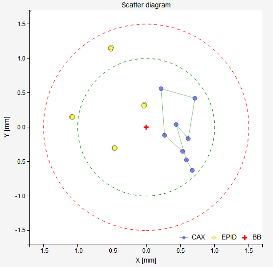
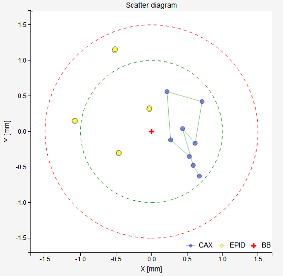

Winston Lutz module¶
The module can be used in two ways, the Pylinac way or the alternative way:
Make any sort of WL measurement with arbitrary gantry, collimator and couch angle, and let Pylinac do the full analysis. If angles are not available as dicom tags, you can pass them in separately.
Follow the instructions below to acquire sets of images with predefined angles. Pylinac will analyze each image, but the end result will be constructed for the purpose of the test. Use this if you wish to measure: the kV-MV isocenter distance, lateral beam deviation, collimator asymmetry and the position of couch axis with respect to the linac isocenter.
Works on both Varian and Elekta machines. Examples of use are at the bottom of the page.
The Pylinac way¶
Collect your images. Tick the Use Pylinac? checkbox. If you are doing the test on an Elekta machine, pass the angles in the Angles for pylinac table. This is equal to doing the analysis manually with Pylinac. You will also be able to download the Pylinac pdf report.
The alternative way¶
This way was adapted for Elekta machines, but it will work in general. Four test types are possible.
Default test with gantry and collimator rotation only.
The Use Pylinac? checkbox and the Set test type? checkbox should both be unticked. This will set the test type to “default”. In order for this to work a predefined minimal set of images must be acquired. The angles are (in exactly this sequence):
Gantry
180
180
270
270
0
0
90
90
Collimator
90
270
270
90
90
270
270
90
This set of images will determine the position of the MV isocenter without the influence of collimator asymmetry (miss-calibration of MLCs or jaws). Always acquire images in the right order, going from left (gantry 180 coll 90) to right (gantry 90 coll 90). Images will be ordered according to acquisition time. If you do not acquire the images in the right sequence, the results will be wrong. You may change the collimator angle, if you wish. For Elekta, for example, you could use 0/180 instead of 90/270.
Note
Using collimator angles 0/180 or 90/270 may give different results for the “BB shift”. This effect might be caused by the focal spot not aligned to the collimator axis of rotation. In essence: because the focal spot is not on the collimator axis of rotation, rotation of the collimator displaces the center of the beam because diaphragms and MLCs are on different levels along the beam line.
If you are using SRS cones, the appropriate sequence is:
Gantry
180
270
0
90
Collimator
0
0
0
0
Default test with added couch rotation.
Tick the Set test type? checkbox and for Test type select the Gnt/coll + couch rotation option. First, collect the minimal set of images. Then put gantry to 0 and collect additional images with couch rotation only. The first additional image must be acquired with the couch at the same position as it was before, ie. 0. This ninth image will serve to bring the established MV average isocenter (with respect to the BB) onto the EPID. You must acquire at least 8+3 images. A normal routine for the 10-th, 11-th etc. image:
Couch
90
60
30
0
-30
-60
-90
The order is not important, but it is best to keep to it.
When analyzing the images, the software will try to fit a circle to the couch points. The center of the circle represents the couch axis. If the BB is too well aligned to the couch axis, you may not get a circle. In this case, make a very small intentional offset in the BB position and redo the test.
Couch rotation only
Set the Test type to Couch only. Put gantry to 0 and acquire images of the BB at different couch angles. The analysis is similar to the one above, only that this time the MV isocenter is missing from the image. For each point in the scatter diagram, the EPID center is considered static. The CAX may wobble a bit, depending on the stability of the beam.
Collimator rotation only
Set the Test type to Collimator only. If your collimator has some asymmetry or a significant wobble, you can estimate the radius of this with this test. Put the BB inside the field and acquire many images at different collimator angles. The BB is considered as static and all CAX scatter points are moving around.
Options¶
- Use pylinac? checked
Full scale Pylinac analysis is performed. Once you tick the checkbox, a new table will show up underneath (Angles for pylinac). There you can enter angles for each image. If you are doing the analysis on a Varian linac, do not enter any values because Pylinac will read the angles from dicom tags. If, on the other hand, you are doing this test on an Elekta linac, then you must enter in angles, because dicom tags are not present. You may image the BB with any gantry/collimator/couch configuration, as long as Pylinac will be able to analyze it.
- Use pylinac? unchecked
Now the software will assume a specific test type. See above for a complete definition. No dicom tags will be read, nor is it necessary to define specific angles. In this situation Pylinac will analyze each image, but the end results will be calculated independently of Pylinac.
- Show EPID2CAX on scatter plot?
When checked, the scatter diagram will show EPID center points with respect to the field CAX. Note that the center of the scatter diagram will have a twofold meaning: BB for CAX points and CAX for EPID points.
- Zoom in on field?
If checked, the image display will zoom-in on the field.
- Clip box
Sometimes images have unwanted artifacts at the edges that could disturb the calculation of field CAX. Here you can enter the size of the central portion of the image beyond which pixel values will be set to background signal. If you don’t want to clip the image, put 0.
- Axis initial guess
When a non-default Test type is defined, the software fits a circle to certain measured points. It may happen that the optimization procedure will not find the correct minimum. In this case you can give a better starting value for the center of the circle to the optimizer. Upper value is x coordinate of the center, and lower y coordinate of the center of the circle. Coordinates are defined in the scatter plot. Values 0, 0 will leave the starting value undefined.
- Deselecting images from the series
When you select a series, you can remove an image from the list by unticking the checkbox next to its name. Deselected images will not be included in the analysis.
- Choose colormap
See https://matplotlib.org/3.1.0/tutorials/colors/colormaps.html for more details.
Things you should know¶
If Use Pylinac? is unchecked, the acquisition order is important:
Warning
The server will assign gantry/collimator angles to images according to acquisition times. Before you use this software, make sure that it is reading acquisition times correctly. Also, observe the gantry/collimator order.
If Use pylinac? is unchecked and neither 4 nor 8 images are contained in the series, only image-wise analysis will be returned. More results can be obtained if you check Use Pylinac? and enter the appropriate angles in the table Angles for pylinac.
Station name is read from the first image of the series.
If you enter non-integer angles for Pylinac, they will be rounded to integers when passed to Pylinac.
Pylinac may clip all four edges from the image to be near background value (see Pylinac documentation).
Using clip box does not change image dimensions, it only forces pixels to certain value.
It may happen that the center of the BB will not be properly detected. This happens if the BB is close to the edges of the field, or if you are doing a non-central WL test. You can use the prism colormap to see if Pylinac has put the BB center into the center of mass of pixel values. You can improve BB detection by adding more MU and increasing field size.
RT image description is gathered from the last instance of the series.
If you wish to analyze images contained in multiple series, it is possible to tick several series at the same time. In this case all the images will be ordered according to acquisition time.
Interpreting results¶
- Images
- dx, dy
Position of the center of the field with respect to the center of the BB.
- Red cross
Center of the BB.
- Blue cross
Center of the field.
- Yellow dot
Center of the image (EPID).
- Blue contour
50%-edge of the field.
- Image Analysis
- CAX x, CAX y
Coordinates of the CAX with respect to the EPID center.
- BB x, BB y
Coordinates of the center of the BB with respect to the EPID center.
The difference between CAX and BB.
- R
The length of the vector from BB to CAX.
Moving the BB into the isocenter
If 8 images were acquired in the correct order:
If 4 images were acquired in the correct order:


Beam deviation
It is possible to determine crossplane (A-B) deviation of the beam from the ideal position. Independently from the previous section we have by taking all images into account:
Or by just observing those at gantry 180/0 (those that have little effect of collimator sag):
This result is independent of the precision with which the BB is positioned into the isocenter.


- Collimator asymmetry
It only works with 8 images. Say your collimator aperture is slightly asymmetrical. When you rotate the collimator, you will notice that the field CAX will move from one point to the other. The server will give you a simple estimate of this displacement by averaging each image pairs (1,2), (3,4), (5,6), (7,8) and calculating the shift from this average for each image. The result is the magnitude of this asymmetry, it is not the absolute error for each side of the field.
- Estimated wobble
- Collimator:
 ,
,where are taken from the previous section (Collimator asymmetry).
- Gantry:

where are image-wise CAX-to-BB deviations.
- EPID center
Average -CAXx and -CAXy.
- Estimated BB wobble (couch rotation)
When the right test type with couch rotation is chosen, this calculation will appear. This is the radius of the circle fitted to BB positions during couch rotation. Note that this radius depends on the relative position of the BB with respect to the couch axis of rotation. There is also some influence of the true couch axis wobble.
- Couch axis distance from average isocenter
When you do the Gnt/coll + couch rotation test, the software will calculate the position of the couch axis of rotation with respect to the average MV isocenter of the linac. Ideally, they should match.
- Scatter diagram
The BB is in the center of the diagram when only blue dots are shown. Blue dots represent field CAX. When Show EPID2CAX on scatter plot? is checked, additional yellow dots are displayed that represent the center of the EPID with respect to the field CAX, which is in the center of the diagram. The green circle corresponds to the normal tolerance, the red circle is the action tolerance. This diagram shows CAX points on the EPID plane, not in 3D space.
- Gantry 2D CAX projection
(Winkler et al) The intersection of beam paths with the LAT-VRT plane (Winkler et al diagrams). Solid lines are beam paths at gantry angles 0 and 90. Dashed lines are beam paths at gantry angles 180 and 270. BB is in the center of the diagram. Purple lines are averages over opposing collimator angles. The cross represents the gantry axis of rotation.
- Couch diagram
The diagram’s coordinate system is that of the EPID. The blue square is the average MV isocenter calculated from first 8 images. The first red dot is the reference image of the BB that is used to define the position of the average MV isocenter. Other red dots are BB positions projected onto the EPID at different couch angles. The cross is the center of the fitted circle which represents the couch axis of rotation. Small blue dots are CAX. They may change a bit because of errors in beam steering and MLC positioning between images, particularly on Elekta linacs. The “couch only” test gives a similar diagram, except that the MV isocenter is missing.
- Collimator diagram
Similar to couch diagram, except that the central point and reference is the BB not the EPID center.
- Status
You can get either Passed, Borderline or Failed status. If you are using 4 or 8 images, then you have the option of applying the tolerance to any each image in the series, or to the section Collimator asymmetry where radius R is calculated by averaging over collimator pairs. See your configuration.
Examples¶
Yellow dots in the following examples show the EPID center with respect to the BB. This was later changed to show EPID center with respect to CAX.
Example 1¶
Task: find the average MV isocenter of the linac and test the position of the couch axis of rotation for radiosurgery. At the same time find the deviation of the kV imaging isocenter from the MV isocenter.
Put the BB phantom on the table. Image the phantom with the kV system. You can use the MV imaging system if that is what you are using clinically. In any case, it is only important that you are imaging and aligning the BB inside the imaging application. Use the robotic couch to make small adjustments of the BB position to get the BB exactly into the imaging isocenter. A reference image of the BB may be a simple CT scan with a treatment plan that has the isocenter exactly in the center of the BB. Or you can use an image of an artifical sphere (this is what Elekta is using during Flexmap calibration).
Eight images are acquired in the usual sequence. After that five images are acquired to evaluate couch rotation. Here are the results:

The results of the last analysis can be reviewed on the scatter diagram. You can see that the BB is not well aligned with the average MV isocenter. The longitudinal displacement is the most obvious. Since the BB is in the imaging isocenter, the MV isocenter is located from this point: 0.46 mm lateral, 0.74 longitudinal and 0.37 mm vertical. This is, at the same time, the deviation of the imaging isocenter from the MV isocenter.
The second diagram neatly shows how far the couch axis is located with respect to the MV isocenter. This deviation is approximately 0.7 mm. On linacs like Elekta VersaHD this should be lower than 0.4 mm.
Example 2¶
With the WL test you can determine if your beam has a lateral deviation. See an example scatter plot below. All blue CAX points are shifted to the right. This does not correspond to an error in the position of the BB, but to an error in the way the beam is targeting the BB. Indeed, the results show exactly this: the BB is perfectly aligned with the average MV isocenter, however there is a 0.5 mm lateral deviation of the beam.
 

Note
Longitudinal deviations of the beam cannot be detected this way. Unless you take the 6 MV beam as the reference. Or, unless you do the test with more collimator angles. See example below.
Example 3¶
Task: determine with the WL test if the beam focal spot is on the collimator axis of rotation.
Shape the field with collimators that are located at different levels along the CAX. For example, two pairs of jaws, or MLCs and one pair of jaws. Position the BB into the average MV isocenter using the minimal set of images with collimator angles 0/180. Once the BB is in position repeat the test with a similar sequence, except that the collimator angles should be 90/270. Compare the results in “Moving the BB into the isocenter”. If they differ a lot, then it may be that the focal spot of your beam is not where it should be. Of course, there are other influences like jaw/MLC sag, but usually these are not so severe. To further test the focal spot position you can use the Field size module and follow 1 2.
- 1
Chojnowski JM, Taylor LM, Sykes JR, Thwaites DI, Beam focal spot position determination for an Elekta linac with the Agility® head; practical guide with a ready-to-go procedure, J Appl Clin Med Phys. 2018 Jul;19(4):44-47
- 2
Jacek M. Chojnowski, Michael P. Barnes, Jonathan R. Sykes, David I. Thwaites, Beam focal spot position: The forgotten linac QA parameter. An EPID‐based phantomless method for routine Stereotactic linac QA, J Appl Clin Med Phys. 2017 Sep; 18(5): 178–183.